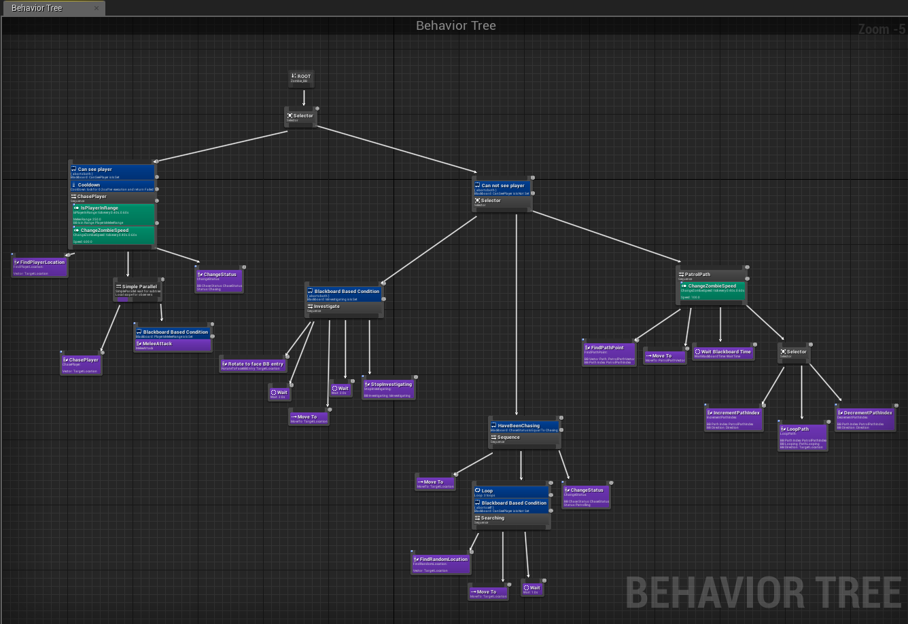

AI Blueprints in UE4
Behaviour Tree
This page shows the behaviour tree that I have used for the AI of the zombie. I plan to work on this in the future to change the tree for different types of zombies. Use the side panel to click through the different parts that make up the tree.

The behaviour tree for the zombie AI uses a collection of different decorators and services in order to set the state for the zombie. A any one time the zombie could be in one of these states: Chasing the player, Investigating, Searching or Patrolling.

This part of the tree uses a decorator to check whether the zombie can see the player. This is done using the sight perception to create a field of view for the zombie. If the zombie can see the player then it will find the player's location and run the custom task: "ChasePlayer" which just moves to the player location using the A* algorithm to find the quickest route. This task is run parallel to the MeleeAttack task runs the attack animation for the zombie. However this is only run when the player is in range of the melee attack. Services are used here to check if the player is wiythin range for the zombie and to speed up the zombie to indicate that it is chasing the player.